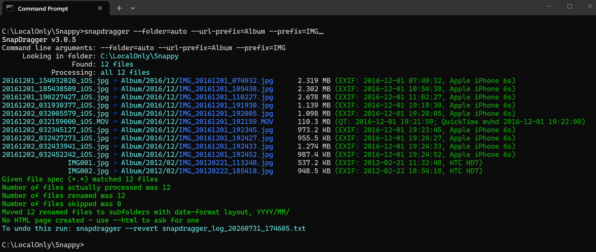
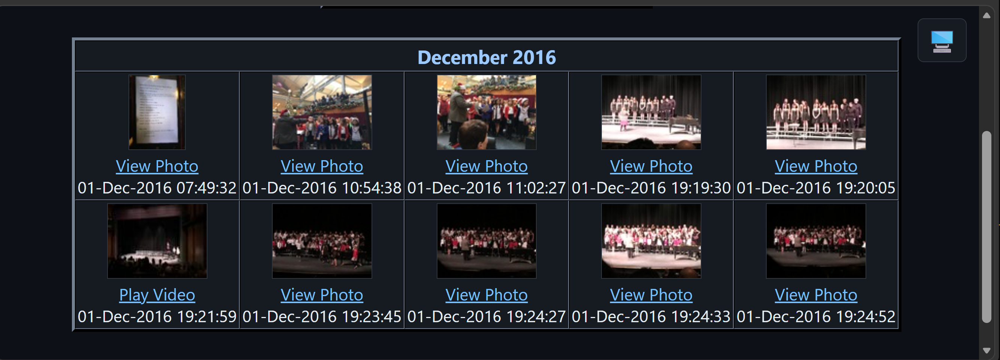
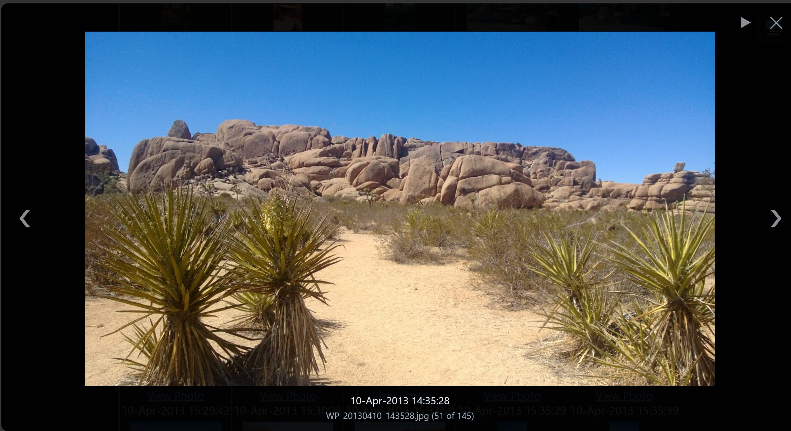
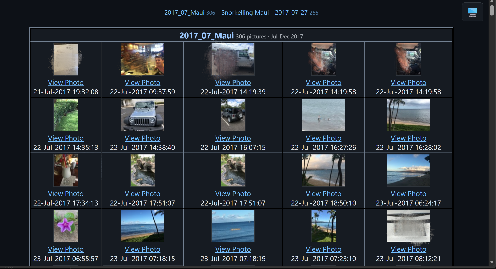

SnapDragger
The app can be installed from:
Requires Windows 10 version 1809 or later, or Windows 11. Both x86 and x64 are supported. Run it from Command Prompt, PowerShell or Windows Terminal.
Tidy up a folder of photographs and video clips from the command line. SnapDragger reads the date each picture was actually taken from inside the file, renames everything to sortable timestamped names, files them into year and month folders, and builds an HTML contact sheet of the whole library. Nothing is renamed unless you ask for it, every run can be previewed first, and every run can be undone.
Windows Command Line JPEG · HEIC · AVIF · PNG MOV · MP4 · WMV · AVI
--list over a folder of 490 photographs. Each line shows the file as it is now, the name SnapDragger would give it, its size, and — in green — the date it found inside the file and the camera that took it. Nothing has been changed.
SnapDragger turns a folder full of photo files with names like DSC00123.JPG or IMG_4471.HEIC into something you can actually find things in. It reads the moment each photograph was taken from the file itself rather than trusting the timestamp your computer shows, renames each one to a name that sorts into chronological order, files it under the year and month it belongs to, and optionally writes an HTML page of thumbnails for the whole collection.
It is a command line tool. There is no window — you point it at a folder and it tells you, line by line, what it found and what it did with it. You can also do a safety dry run where SnapDragger shows you exactly what it will do before anything is changed.
The most up to date version of this information will always be the online version.
A photograph taken by a modern camera or phone “knows” when it was taken. The camera saves that information inside the image file in a “packet” that SnapDragger examines:
Where a file carries no date of its own, its filesystem timestamp is used instead, and the summary line says which, so you always know what you are looking at.
Video is a little trickier. A movie header often records UTC and says nothing about where the camera was, so a clip filmed on holiday comes out hours wrong if it is simply converted to the timezone the computer is sitting in right now. SnapDragger works the offset out per recording: from a nearby clip that carries a suitable tag, which states the offset outright, or, failing that, from the photographs taken around the same time. A folder covering a trip abroad and the weeks either side of it comes out right throughout.
Whatever you choose, the summary line, the HTML links and the place the file actually ends up all agree:

A real run: --prefix=IMG --folder=auto --url-prefix=PhotoAlbum. Twelve files taken in December 2016 and February 2012 are renamed and filed into PhotoAlbum\2016\12 and PhotoAlbum\2012\02 according to the date inside each one — note the .MOV clip, whose date came from its QuickTime tags. The last line is the command that would put it all back again.
SnapDragger optionally writes an HTML page with a table for each month, in date order, each cell holding a thumbnail that links to the picture itself.

The page produced by the run above. Each month gets its own table, oldest first, and every cell is captioned with the moment the picture was taken. A clip is labelled Play Video rather than View Photo, and its thumbnail is a frame taken from a few seconds in. (Faces blurred here for the website.)
The page is rebuilt from what is on disk rather than from whatever this particular run happened to be given, so it always describes the whole library. Add more photographs later, run it again, and only the months you actually added to are rebuilt — every other month is carried through exactly as it was. Thumbnails are made for anything on the page that lacks one, so an older file never shows a broken picture.
Thumbnails load as you scroll to them, so a month of several hundred pictures opens at once rather than waiting on every image at the top. A page is only a hundred kilobytes of HTML; it was the hundreds of separate image reads that made a big one slow, especially from a synced folder where some may not be on the disk yet. Each cell already declares the size it will be, so nothing jumps about as they arrive.
Thumbnails all share a height so a row of them lines up, and the width follows each picture's own shape, so a portrait photograph is never squashed into a landscape box. The Exif orientation is honoured, which matters more than you might think — how often have you seen people's photos stored sideways and had to awkwardly tilt your head to view them?
Everything the contact sheet needs is written into it — the stylesheet and all — so it can be mailed, copied onto a memory stick or opened years later without hunting for anything alongside it. There is a button in the top right corner that cycles follow the machine → light → dark, and it remembers which you chose, so a page kept beside these ones agrees with them about the theme.
A page whose header you wrote yourself keeps it. SnapDragger only supplies one where there was nothing above the first table, so a contact sheet you have dropped your own heading or styling onto is left as you made it.
A heading carries the name, then how many pictures are under it and when they were taken:
so a table can be judged before it is scrolled through, and two compared without counting. The range is said at the coarsest granularity that still tells you something — 12 Jan 2016 for a single day, 3-27 Jan 2016 across one month, Mar-Jun 1998 across one year, and Mar 1998 - Jun 2001 for anything wider.
It is left off where it would only repeat the heading: a table called September 2013 holding nothing but September 2013 gains nothing from a date after it, so it shows just the count. A folder whose name says nothing about when — Scans, Odds and Ends — always keeps its range, which is the case the range is really there for.
A page holding more than one table gets a strip of links across the top, one per table, each with its count — September 2013 9 · October 2013 41 · December 2016 23. A page with a single table gets no strip rather than a strip with one entry in it.
The strip is built by the page itself when it opens rather than written out by the program, and the reason is the way pages are rebuilt: a month at a time, with every untouched month copied through byte for byte, so nothing in SnapDragger ever holds the whole list of tables at once. By the time they are all in the one document, the browser does.
Clicking a thumbnail shows the picture over the contact sheet rather than opening a tab. An arrow at each edge moves to the previous or next item in the same table, and disappears when there is nothing that way. The left and right keys do the same, Escape closes, and so does clicking the background. Underneath sits the caption, the file name, and how far through you are.
The point is not having to switch tabs to see the next photograph, so nothing about it opens a tab if it can avoid it. Nothing extra is written into the page to make it work either: every cell already holds the full-size path and its caption, and the cells are in a table, so “the next one” is simply the next cell along. The links keep their target="_blank", so with JavaScript turned off the page behaves exactly as it did before there was a viewer at all.
There is a slideshow too, from the button beside the close or from S or the space bar. Four seconds a picture; a movie is left to play out and moves on when it ends, rather than being cut off after the same few seconds a photograph gets. It steps the same way the arrows do, so it skips whatever they skip, and it stops at the end of the table rather than sitting on the last picture with a timer still going round.

The viewer, with the contact sheet still behind it. The arrows move along the table and the ▶ starts the slideshow; underneath sits the caption, the file name, and how far through the table you are — 51 of 145.
HEIC is the awkward one — browsers cannot generally display it, although the thumbnail works because SnapDragger generates a JPEG for it. WMV, ASF and AVI no browser will play.
Rather than carry a list of what browsers could manage on the day the page was written, the viewer tries the file and believes the answer. If it will not decode, the viewer gets out of the way and the file opens in a tab exactly as it used to — and that format is not attempted again while the page is open, so only the first click on a given format costs anything.
Arrowing onto something that will not decode steps over it rather than throwing you into a tab midway through a month. A tab is opened only when that file is the one you clicked, which is the case where opening it is what you actually asked for.
--scanfolders builds the page from what is on disk and does nothing else: nothing is renamed and nothing is moved. Useful for indexing a library that is already tidy, or for building a fresh page after moving things about by hand. What goes in which table is up to you:
The folder form looks two folders deep, counting only folders that actually hold pictures: one holding nothing but other folders describes nothing, so it is walked through for free. That matters because --folder=auto given a base folder builds Albums\YYYY\MM — the pictures sit three folders down with the first two empty, and they are still found from the top.
One page for a whole library gets slow to open long before it gets hard to read — a few thousand cells is a few thousand thumbnails, and loading them as you scroll defers the reading but not the parsing. Put a * in the name and you get a page per subfolder instead, the star standing for the folder's own name:
Each page holds every table belonging to that subfolder, however many levels down they were found, so 2016\01 and 2016\02 stay together on 2016.html rather than being scattered. Pictures sitting directly in the folder you scanned belong to no subfolder, so their page is named for that folder.
Any folder given in the pattern is kept, so --html=pages\*.htm writes the whole set into pages. The extension is kept too, which is what decides the index's name: *.html gives index.html and *.htm gives index.htm, since one set of pages with two spellings in it would only confuse. A star is the sentinel precisely because Windows will not allow one in a file name, so no real name can be mistaken for a pattern.
The way in is written last, once every page is known: one cell per page, showing that folder's first picture as its thumbnail, its name, and how many pictures it holds. The index carries the theme switch but not the picture viewer — the links here go to pages rather than to photographs, and a viewer would try to display one as though it were a picture. A folder actually called index would have taken that name already, and rather than write over a real page the run keeps it and says so.
Splitting is something only the folder grouping can do: a table per month comes from the dates rather than from the folders, so there is nothing to name a page after. Asking for both is refused rather than quietly given one page.

A generated page, in the dark theme. The strip along the top links to each table with its count; the heading gives the folder's name, how many pictures are under it and when they were taken — 306 pictures · Jul-Dec 2017.
A folder name and a file spec look exactly alike on a command line, and only the directory part of a file spec — everything up to the last backslash — says which folder to work in. So a bare folder name used to be read as a file name to match, and the run went through the current folder instead of the one you asked for.
The disk settles it. Where the argument really is a folder, it is the folder to work in and everything in it is what to work on, and the run says so rather than quietly working somewhere you did not type:
A wildcard can never name a folder — no file system here allows * or ? in a name — so every file spec that already worked is untouched. The folder may also be given on the option itself, as --scanfolders="Holiday Pictures"; the words folders and dates keep their meaning there, so a folder named one of those two has to be given as the file spec instead.
A quoted path ending in a backslash escapes its own closing quote. The quoted string then never closes and runs on into whatever followed it, so this:
arrives as one argument reading Holiday Pictures" --html=, with the option that was swallowed simply gone. This is the Windows argument parser rather than SnapDragger or the command prompt, and it catches every program the same way — which is why the failure that follows never seems to have anything to do with the cause.
By the time a program sees its arguments the backslash has gone and a literal quotation mark is left in its place. That is the only trace there is, so that is what SnapDragger looks for; and since Windows permits no quotation mark in a file name, finding one is never a false alarm:
It is a warning rather than a refusal: by that point the arguments have been merged and nothing can un-merge them, so the run carries on and fails on its own terms.
If you want to convert a folder of .heic images to .jpg so you can view them all in your browser, and have SnapDragger build the pages for them, this procedure works well. Starting with your command window in the folder holding the .heic files, convert them with ImageMagick and then move the originals into the thumbnails folder. That way you still have them, but they are not included in the SnapDragger tables:
It works because SnapDragger never reads a thumbnails folder — it is where the generated thumbnails live, and reading it would list every picture twice. So anything put in there is invisible to the contact sheet while staying exactly where you can find it. The -auto-orient turns each picture the way its Exif says it should be shown, and the if exist moves an original only once its JPEG has actually appeared, so a conversion that fails leaves that file where it is.
One thing to watch if you are typing this into a .cmd file rather than at the prompt: the loop variable has to be doubled there, so %f becomes %%f and %~nf becomes %%~nf. Left single it fails with was unexpected at this time.
HEIC support in ImageMagick comes from the libheif delegate, which the standard Windows installer includes. If nothing converts, check with:
A line reading HEIC HEIC r-- is all this needs. The r is for reading, which is the direction that matters — the JPEGs come out of the JPEG encoder. A build that cannot write HEIC, which is the common case, still converts out of it perfectly well.
Lastly, a folder called thumbnails looks disposable: it is exactly the sort of thing that gets deleted to reclaim space, so keep that in mind if the originals matter to you.

A --dry-run: every name each file would be given is shown in green, and the run finishes by saying plainly that nothing was renamed, moved or created. Run it again without --dry-run to do it for real.
And when a run has done something you did not want, it can be undone. Every run that moves anything writes a plain-text log beside the files and finishes by telling you how to use it:
Undoing puts every file back under its old name, removes the thumbnails that run created, and takes away any folder it emptied. A file already sitting where one belongs is left alone rather than written over, and reported. --dry-run works here too, showing everything that would go back without touching anything.
--info shows everything a file says about itself and changes nothing. The camera and lens, every date it carries, the settings it was taken with, and — where the camera recorded one — the position:
=== WP_20130922_002.jpg === File size : 2.587 MB (2713060 bytes) Camera make : Nokia Camera model : Lumia 920 Lens : Software : Windows Phone Taken : 2013:09:22 08:23:10 Orientation : 1 (upright) Resolution : 2000 x 3552 pixels ISO speed : 100 Exposure time : 1/289 second Aperture : f/2.0 Focal length : Flash : did not fire Metering mode : Exposure program : Description : Comment : GPS latitude : N 49d 27m 36.284s GPS longitude : E 11d 5m 13.091s GPS position : 49.460079, 11.086970 GPS altitude : 0.0 m above sea level Main block X resolution : 72 Y resolution : 72 Resolution unit : 2 YCbCr positioning : 1 Tag 0xEA1C : 2060 bytes Exif block Exif version : 4 bytes Components cfg : 4 bytes Exposure bias : 0/6 (0) Maker note : 5231 bytes Flashpix version : 4 bytes Colour space : 1 Interoperability : 9805 Tag 0xEA1C : 2060 bytes GPS block GPS version : 4 bytes GPS measure mode : 3 GPS accuracy : 10000/130000 (0.0769231) Tag 0xEA1C : 1888 bytes Thumb block Compression : 6 X resolution : 72 Y resolution : 72 Resolution unit : 2 Thumbnail offset : 12008 Thumbnail length : 12708
One photograph, taken in Nuremberg on a Nokia Lumia 920. This is a real run captured to a file and turned into HTML; only the run's opening banner and closing summary are trimmed, since the captures above already show those.
The labels are right aligned so the colons line up, and the file name is in a colour nothing else uses, so a run over a folder breaks cleanly into one block per picture.
The first block is always the same shape, blank where the file said nothing, so two files can be read down side by side and a missing camera is as plain as a present one. Every date the file carries is listed under the name of where it came from rather than only the one a new name would be built from — a file disagreeing with itself is the usual explanation for a name that looks wrong.
The position block appears only where there is one. It is given both as degrees, minutes and seconds to read, and as a signed decimal pair to paste into a map. Exif stores the hemisphere as a letter with the number always positive, so the sign is worked out here — otherwise everywhere south and west lands in the wrong quarter of the world.
Then whatever else the file turned out to carry, grouped by the block it came from: the main image, the Exif block, the GPS block, and the thumbnail's own. A tag with a name gets it; one without is shown by its number, as Tag 0xEA1C : 2060 bytes, because a file holding something the program does not recognise is worth knowing about — and hiding it is the one thing an option called --info must not do. Around a hundred tags are named.
The output is colour-coded: the file as it is now, the name it is being given, where the date came from, and anything that needs your attention. On Windows that colour is a property of the console rather than part of what the program writes, so redirecting a run to a file has always produced clean plain text — correct, but no use to anything that wanted the colours.
--color=always writes the colour into the output instead, as ANSI escape sequences, wherever that output is going. A captured run keeps its colours, which is what these are — real runs, captured to a file and turned into HTML, not screenshots:
--list over a folder: fifteen files found, twelve of them pictures, nothing changed. Each line gives the file as it is now, the name it would be given, its size, and where the date came from.
SnapDragger v3.0.4 Command line arguments: --color=always --list Looking in folder: C:\LocalOnly\Snappy 20161201_154932020_iOS.jpg → WP_20161201_074932.jpg 2.319 MB (EXIF: 2016-12-01 07:49:32, Apple iPhone 6s) 20161201_185438509_iOS.jpg → WP_20161201_105438.jpg 2.302 MB (EXIF: 2016-12-01 10:54:38, Apple iPhone 6s) 20161201_190227427_iOS.jpg → WP_20161201_110227.jpg 2.678 MB (EXIF: 2016-12-01 11:02:27, Apple iPhone 6s) 20161202_031930377_iOS.jpg → WP_20161201_191930.jpg 1.139 MB (EXIF: 2016-12-01 19:19:30, Apple iPhone 6s) 20161202_032005579_iOS.jpg → WP_20161201_192005.jpg 1.098 MB (EXIF: 2016-12-01 19:20:05, Apple iPhone 6s) 20161202_032159000_iOS.MOV → WP_20161201_192159.MOV 110.3 MB (QT: 2016-12-01 19:21:59; QuickTime mvhd 2016-12-01 19:22:00) 20161202_032345127_iOS.jpg → WP_20161201_192345.jpg 973.2 KB (EXIF: 2016-12-01 19:23:45, Apple iPhone 6s) 20161202_032427273_iOS.jpg → WP_20161201_192427.jpg 955.5 KB (EXIF: 2016-12-01 19:24:27, Apple iPhone 6s) 20161202_032433941_iOS.jpg → WP_20161201_192433.jpg 1.274 MB (EXIF: 2016-12-01 19:24:33, Apple iPhone 6s) 20161202_032452242_iOS.jpg → WP_20161201_192452.jpg 987.4 KB (EXIF: 2016-12-01 19:24:52, Apple iPhone 6s) IMG001.jpg → WP_20120221_113248.jpg 537.2 KB (EXIF: 2012-02-21 11:32:48) IMG002.jpg → WP_20120222_185418.jpg 948.5 KB (EXIF: 2012-02-22 18:54:18) Given file spec (*.*) matched 15 files Number of files actually processed was 12 Number of files renamed was 0 Number of files skipped was 3 No HTML page created - use --html to ask for one
Renaming and filing for real with --folder=auto --url-prefix=Albums: twelve files sorted into Albums\2016\12 and Albums\2012\02 by the date inside each one. The last line is the command that would put them all back.
SnapDragger v3.0.4 Command line arguments: --color=always --folder=auto --url-prefix=Albums Looking in folder: C:\LocalOnly\Snappy 20161201_154932020_iOS.jpg → Albums/2016/12/WP_20161201_074932.jpg 2.319 MB (EXIF: 2016-12-01 07:49:32, Apple iPhone 6s) 20161201_185438509_iOS.jpg → Albums/2016/12/WP_20161201_105438.jpg 2.302 MB (EXIF: 2016-12-01 10:54:38, Apple iPhone 6s) 20161201_190227427_iOS.jpg → Albums/2016/12/WP_20161201_110227.jpg 2.678 MB (EXIF: 2016-12-01 11:02:27, Apple iPhone 6s) 20161202_031930377_iOS.jpg → Albums/2016/12/WP_20161201_191930.jpg 1.139 MB (EXIF: 2016-12-01 19:19:30, Apple iPhone 6s) 20161202_032005579_iOS.jpg → Albums/2016/12/WP_20161201_192005.jpg 1.098 MB (EXIF: 2016-12-01 19:20:05, Apple iPhone 6s) 20161202_032159000_iOS.MOV → Albums/2016/12/WP_20161201_192159.MOV 110.3 MB (QT: 2016-12-01 19:21:59; QuickTime mvhd 2016-12-01 19:22:00) 20161202_032345127_iOS.jpg → Albums/2016/12/WP_20161201_192345.jpg 973.2 KB (EXIF: 2016-12-01 19:23:45, Apple iPhone 6s) 20161202_032427273_iOS.jpg → Albums/2016/12/WP_20161201_192427.jpg 955.5 KB (EXIF: 2016-12-01 19:24:27, Apple iPhone 6s) 20161202_032433941_iOS.jpg → Albums/2016/12/WP_20161201_192433.jpg 1.274 MB (EXIF: 2016-12-01 19:24:33, Apple iPhone 6s) 20161202_032452242_iOS.jpg → Albums/2016/12/WP_20161201_192452.jpg 987.4 KB (EXIF: 2016-12-01 19:24:52, Apple iPhone 6s) IMG001.jpg → Albums/2012/02/WP_20120221_113248.jpg 537.2 KB (EXIF: 2012-02-21 11:32:48) IMG002.jpg → Albums/2012/02/WP_20120222_185418.jpg 948.5 KB (EXIF: 2012-02-22 18:54:18) Given file spec (*.*) matched 17 files Number of files actually processed was 12 Number of files renamed was 12 Number of files skipped was 5 Moved 12 renamed files to subfolders with date-format layout, YYYY/MM/ No HTML page created - use --html to ask for one To undo this run: snapdragger --revert snapdragger_log_20260730_163934.txt
A --dry-run with --dedupe and a contact sheet: the duplicate search, every name that would be given and every folder that would be made — without a single file being touched.
SnapDragger v3.0.4 Command line arguments: --color=always --html=index.htm "--url-prefix=Family Albums" --folder=auto --dedupe --dry-run Looking in folder: C:\LocalOnly\Snappy Looking for identical files among the 13 found... No duplicates were deleted. 20161201_154932020_iOS.jpg → Family Albums/2016/12/WP_20161201_074932.jpg 2.319 MB (EXIF: 2016-12-01 07:49:32, Apple iPhone 6s) 20161201_185438509_iOS.jpg → Family Albums/2016/12/WP_20161201_105438.jpg 2.302 MB (EXIF: 2016-12-01 10:54:38, Apple iPhone 6s) 20161201_190227427_iOS.jpg → Family Albums/2016/12/WP_20161201_110227.jpg 2.678 MB (EXIF: 2016-12-01 11:02:27, Apple iPhone 6s) 20161202_031930377_iOS.jpg → Family Albums/2016/12/WP_20161201_191930.jpg 1.139 MB (EXIF: 2016-12-01 19:19:30, Apple iPhone 6s) 20161202_032005579_iOS.jpg → Family Albums/2016/12/WP_20161201_192005.jpg 1.098 MB (EXIF: 2016-12-01 19:20:05, Apple iPhone 6s) 20161202_032159000_iOS.MOV → Family Albums/2016/12/WP_20161201_192159.MOV 110.3 MB (QT: 2016-12-01 19:21:59; QuickTime mvhd 2016-12-01 19:22:00) 20161202_032345127_iOS.jpg → Family Albums/2016/12/WP_20161201_192345.jpg 973.2 KB (EXIF: 2016-12-01 19:23:45, Apple iPhone 6s) 20161202_032427273_iOS.jpg → Family Albums/2016/12/WP_20161201_192427.jpg 955.5 KB (EXIF: 2016-12-01 19:24:27, Apple iPhone 6s) 20161202_032433941_iOS.jpg → Family Albums/2016/12/WP_20161201_192433.jpg 1.274 MB (EXIF: 2016-12-01 19:24:33, Apple iPhone 6s) 20161202_032452242_iOS.jpg → Family Albums/2016/12/WP_20161201_192452.jpg 987.4 KB (EXIF: 2016-12-01 19:24:52, Apple iPhone 6s) IMG001.jpg → Family Albums/2012/02/WP_20120221_113248.jpg 537.2 KB (EXIF: 2012-02-21 11:32:48) IMG002.jpg → Family Albums/2012/02/WP_20120222_185418.jpg 948.5 KB (EXIF: 2012-02-22 18:54:18) Given file spec (*.*) matched 13 files Number of files actually processed was 12 Number of files that would be renamed was 12 Number of files skipped was 1 Would move 12 renamed files to subfolders with date-format layout, YYYY/MM/ HTML table would be written to index.htm *** DRY RUN - nothing was renamed, moved or created. Run again without --dry-run to do it for real. ***
Being escape sequences rather than a picture, a capture like that is still text: searchable, selectable, and sharp at any size. It also means a run stays coloured through a pipe, into a pager, or in a build log.
--color=never, or the NO_COLOR environment variable, turns colour off everywhere. The default, --color=auto, is what has always happened: colour on a console, plain text into a file.
Every option has a spelled-out name; six of them also keep a single letter. Run snapdragger --help for the full built-in help, which is where this summary comes from.
Coloured output can be turned off by setting the NO_COLOR environment variable, or with --color=never, and kept when the output is redirected with --color=always.
Look at what is in a folder, changing nothing:
Rename by the date inside each file, with an IMG prefix, and file everything into the YYYY\MM tree:
See exactly what that would do, without touching anything:
Try it on just the first ten files before committing to the lot:
Rename a folder holding both originals and reduced copies, keeping the two apart rather than letting them collide:
Start the name with the year rather than a prefix, and keep the _iOS that the phone put on the end:
Only files that carry their own date, skipping the rest:
Build a contact sheet for a library that is already tidy, changing nothing else:
The same, but with a table per month worked out from the dates rather than from the folders:
The same again, but giving each subfolder its own page rather than one enormous one, with an index.html to open first:
Scan one folder rather than the current one, and open the page when it is built:
Capture a run to a file and keep the colours in it:
Read from inside JPEG, HEIC, AVIF, MOV, MP4, M4V, WMV and AVI files, not from the timestamp Windows shows.
Renames to <prefix>_YYYYMMDD_HHMMSS, so a folder listing is a timeline.
Files everything into a YYYY\MM tree, optionally underneath a folder of your own choosing.
An HTML page with one table per month, in date order, each thumbnail linking to the picture itself.
Add more photographs later and only the affected months are rebuilt; the rest of the page is untouched.
Pictures taken sideways are shown the right way up, and each thumbnail is sized to its own picture's shape.
Works out a video's offset from UTC per recording, so a trip abroad no longer comes out hours wrong.
--dry-run shows exactly what would happen, clash suffixes and all, without touching a thing.
Every run that moves anything writes a log, and --revert puts every file back where it came from.
Compares files in full, not by checksum, and offers to send the copies to the Recycle Bin.
--list reports on a folder and changes nothing — and says so if an option would.
Colour-coded lines telling you where each date came from and what took the picture, in lined-up columns.
--info shows every date, setting and tag a photograph carries, and where it was taken.
--color=always puts the colour into the output itself, so a run captured to a file stays coloured.
--scanfolders gives every folder its own table, named for it — or a table per month, as you prefer.
--html=*.html splits a big library into one page per subfolder, with an index showing each one's first picture.
Press S in the viewer and it runs itself, four seconds a picture, letting each movie play out in full.
Click a thumbnail and page along the month with the arrow keys, without ever leaving the contact sheet.
The contact sheet carries its own styling and a light and dark switch, so it works wherever you put it.
UTF-8 throughout, so accents and non-Latin scripts in file names are handled rather than mangled.
The app can be installed from:
Requires Windows 10 version 1809 or later, or Windows 11. Both x86 and x64 are supported. Run it from Command Prompt, PowerShell or Windows Terminal.
SnapDragger does everything except making thumbnails without any help. For thumbnails it uses two free tools, neither of which is included. It finds them on your PATH, so they need to be somewhere Windows looks:
With only ImageMagick installed, pictures get their thumbnails and movies do not. With neither, no thumbnails are made at all and the run carries on regardless — the page is still written, and the links to the pictures themselves still work.